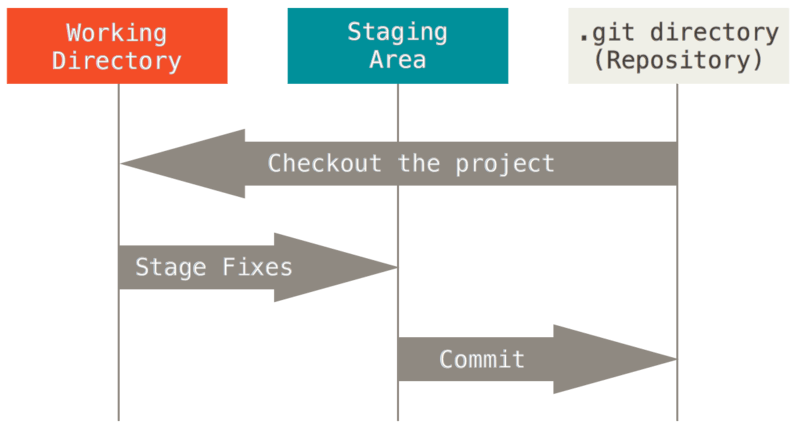

Viajando en el tiempo con Git
Santos Gallegos
-
santos_g@outlook.com
@stsewd
Git
Es un...
Más adelante lo descubriremos
Problemas del día a día
Escribiendo un texto (o código)
Algunas cosas pueden salir mal
- Se borre el archivo
- Olvidar qué fue lo último que hice y cuándo
- Editar/eliminar la parte equivocada
- Olvidar porqué edite/eliminé esa parte
- Compartirlo con alguien más
- Explicar porqué edité/eliminé esa parte

Solución
Tener todo la información en el presente es un caos
Tener una máquina del tiempo
Escribiendo un texto (o código)
¡En grupo!
Todo puede salir muy mal
- Trabajar todos al mismo tiempo
- Unir los cambios
- Quién hizo qué
Solución
Tener todo la información y todas las personas en el presente es un caos
Tener muchas máquinas del tiempo
Sistema de control de versiones
- Abreviado VCS
- Darle seguimiento a los cambios hechos sobre un archivo
- Restaurar un archivo a un estado anterior
- Quién, Cuándo, Qué
- Ramificaciones
- Mezclar cambios
Git
Es un...
¡Una máquina del tiempo!
¡Una máquina del tiempo!
Un sistema de control de versiones
Pero muy parecido a una máquina del tiempo
No es el único

Git
- Linus Torvalds, 2005
- Open source
- VCS distribuído
- Multiplataforma
- Integración con varios editores e IDEs
¿Cómo funciona?
- Le decimos a Git que mantenga un registro de nuestros archivos
- Editamos nuestros archivos
- Le decimos a Git que guarde nuestros cambios
- Volvemos a editar nuestros archivos
Conceptos básicos
Repositorio (repo)
- Es nuestro proyecto
- Tenemos repos locales y remotos
Commit
- Un punto de restauración (snapshot) de nuesto proyecto
- Cada commit está identificado por un hash único (SHA-1)
a906cb2a4a904a152e80877d4088654daad0c859.
Los 3 estados
- Área de trabajo (working directory)
- Área de staging (staging area)
- Área del repositorio (repo area)
Los 3 estados
- Working directory (los archivos editados)
- Staging area (cambios a ser guardados)
- Repo area (cambios guardados)
Los 3 estados
Instalación
git --version
Haciéndole saber a Git quién soy
Registrándonos como viajeros del tiempo
git config --global user.name "Santos Gallegos"
git config --global user.email "santos_g@outlook"
Iniciando nuestro repo
Preparándo nuestra máquina del tiempo
cd /home/mi_proyecto/
git init
Git status
¿En qué estado están mis archivo?
git status
Archivos nuevos no son registrados por Git (untracked).
Cambios a ser guardados
git add <archivo>
Guardar nuestros cambios
git commit

¿Dónde veo mis commits?
Explorando el pasadoVer todos nuestros commits
git log
Ver un commit específico
git show <hash>
Ignorando archivos
Información no relevante para mis viajes en el tiempo- Archivos autogenerados
- Archivos sensibles (contraseñas, configuraciones de producción)
- Archivos del sistema operativo (*~, .DS_Store, Thumbs.db)
# Archivo .gitignore
# Archivos del SO
*.DS_Store
*~
Thumbs.db
# Otros archivos
build/
passwords.txt
¿Cuándo vamos a viajar en el tiempo?
Viajando en el tiempo
Abróchate el cinturón
git checkout <hash>